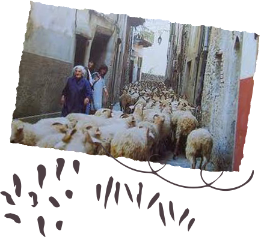
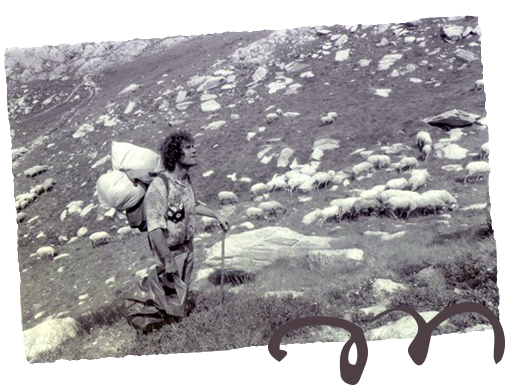
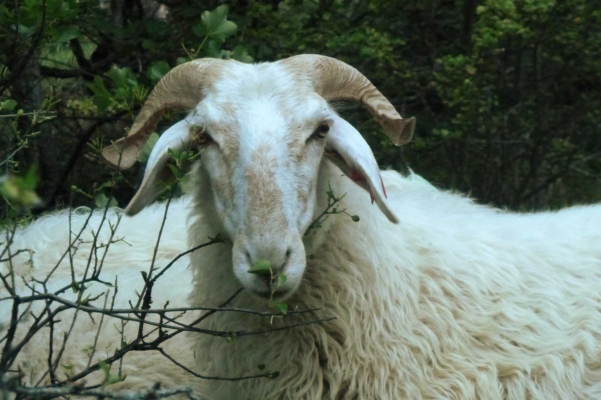

La brigasque
Son histoireLa Brigasque, histoire d’une brebis qui a failli disparaitre
La Brigasque tire son nom du village de la Brigue, située dans la vallée de la Roya, dans les alpes maritimes.
Les bergers brigasques pratiquaient la transhumance hivernale. Les troupeaux basés dans la roya descendaient passer l’hiver sur la côte d’azur, ainsi les bergers pouvaient écouler leurs produits facilement et les brebis bénéficiaient d’herbe de bonne qualité tout l’hiver. Le printemps venu les troupeaux remontaient progressivement vers les pâturages des alpes. De cette pratique ancestrale vient la très bonne aptitude de la brigasque à agneler à l’automne.


Très présente jusque dans les années 1960, les effectifs de la race se sont effondrés brutalement, pour atteindre à peine plus de 500 têtes dans les années 2000, dont seulement 3 élevages professionnels.
Cet effondrement est dû en partie à l’exode rural, en partie à l’urbanisation de la côte d’azur, rendant impossible la pratique de la transhumance hivernale.
Dans les années 70 une poignée de bergers néo ruraux reprennent le flambeau de la brebis brigasque. C’est eux qui sauvegardèrent la race en reprenant des troupeaux et en continuant à fabriquer du fromage de façon ancestrale. Pascal et Gisèle Bonneville en particulier, s’attelèrent à faire connaître et à diffuser inlassablement la race auprès de jeunes bergers.
A partir de 2010 la Brigasque connait un renouveau et commence à se diffuser. En 2018 on comptait plus de 1300 brebis et une dizaine d’élevages professionnels. La race est encore majoritairement présente dans son berceau d’origine des alpes maritimes.

Egalement présente sur le versant italien, du val pelice dans le piemont jusqu’en ligurie, la race porte le nom de Roaschina ou de Fabrosana (le nom international reconnu est celui de Brigasque). Moins impacté que la population française dans les années 80 et 90, c’est maintenant que les effectifs Italiens diminuent fortement, avec en plus un abandon progressif de la traite. Des échanges réguliers ont lieu entre bergers français et italiens.
Une race à revaloriser
Le regain d’intérêt pour la transformation et la vente directe des produits, pour le maintien de la biodiversité et des systèmes pastoraux extensifs profitent au développement de la race.
Le retour du loup et la forte prédation sur les troupeaux ovins – dont souffre également la Brigasque – incite de plus en plus d’éleveurs pastoraux à s’orienter vers la production laitière, systèmes pastoraux extensifs en zone alpine sèche ou parcours méditerranéens particulièrement adaptés à la race.

Les atouts de la brebis brigasque sont sa durée de traite, sa capacité à remonter en lactation avec la pousse de l’herbe, ses trayons très bien conformés et donc sa facilité de traite, son aptitude à la marche sur des terrains escarpés et sa toison abondante.

Son attitude particulière, à la fois fière et très familière, ainsi que son « look » unique la rende très attachante. Lorsqu’on s’y est habitué on ne peut plus s’en passer !

Des produits à l’identité forte – tomme brigasque, tapis en laine – sont un atout pour assurer la viabilité des élevages et se différencier sur les marchés.

Crée en 2012, L’Association des Eleveurs de Brebis Brigasques favorise le lien entre éleveurs et s’attache à mettre en valeur la race.
Dans un espace naturel à protéger
Grande marcheuse, elle est adepte des alpages de montagne et des parcours méditéranéens
La brebis brigasque a été façonnée par son système d’élevage très extensif basé exclusivement sur le pâturage de parcours de montagne sèche ou de landes méditerranéens. De là viens son aptitude de marcheuse et sa capacité à trouver sa nourriture dans des pâturages «maigres».

Bien que les bergers s’efforçaient toujours de lui trouver de l’herbe riche et jeune (de cela dépend la lactation) cela s’effectuait toujours au prix de nombreuses transhumances et de longues marches journalières.

Aujourd’hui les systèmes ont évolués, notamment en raison de la fin du pâturage sur la côte d’azur, mais malgré une complémentation en fourrage durant l’hiver, les systèmes restent basés sur le pâturage.
Une de ses particularités est de montrer une grande appétence pour les végétaux ligneux, arbres et arbustes.
